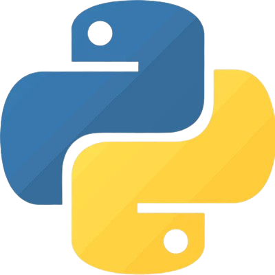
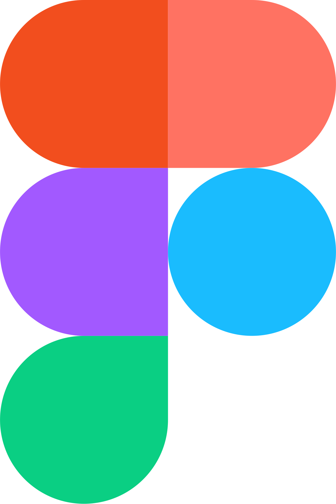
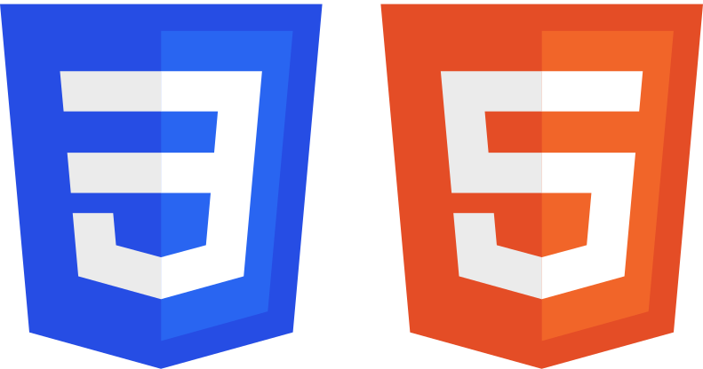

Anders Finnebråten Gjerald
Interaksjonsdesign, brukeropplevelse og utvikling.
Med bakgrunn i medie- og interaksjonsdesign og masterstudie i informasjonsvitenskap blander jeg designmetodikk og data for å skape optimaliserte systemer med fokus på brukeropplevelse.
Mine Ferdigheter
- Python
- Figma
- HTML og CSS
- JavaScript
-
 SQL
SQL